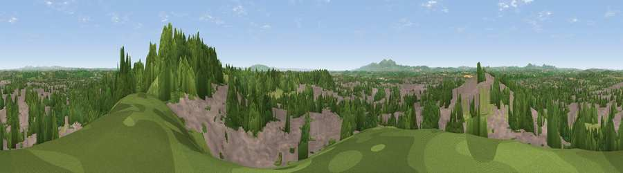

Viewpoint near Worcester
#14396 in England · top 30% of its area beats it · near WorcesterThe view, rendered

A 360° render of this exact spot computed from the terrain model, tree cover and land cover — summer colours, afternoon light, calibrated against photographs of famous viewpoints. Real trees, hedges and buildings will differ in detail.
The panorama
Grey silhouette: terrain skyline in each direction (720 bearings, Earth curvature and refraction included). Dashed green: skyline with trees (+15 m) and buildings (+8 m) as obstacles. Blue strip: how far the ground is visible on each bearing.
Where the view opens
Wedge length = distance to the farthest visible ground on that bearing (vegetation-aware). Rings at 10, 25 and 50 km.
What fills the view
47% built-up · 34% woodland · 15% grassland · 3% cropland
Angular shares of the visible panorama (visual magnitude), not map area. Landscape diversity 0.49 (0–1 Shannon).
Key numbers
More beautiful places nearby
The staircase of upgrades: each row has a higher view potential than everything closer. Driving times are estimates from straight-line distance, calibrated against real road routing — check an actual route before setting out.
| Place | Direction | Drive | Score |
|---|---|---|---|
| Viewpoint near Worcester | E · 0 km | ~1 min | 61.1 |
| Viewpoint near Worcester | ESE · 1 km | ~2 min | 62.0 |
| Viewpoint near Littleworth | SSE · 4 km | ~9 min | 65.8 |
| Viewpoint near Martley | WNW · 12 km | ~23 min | 78.1 |
| Viewpoint near West Malvern | SW · 13 km | ~24 min | 81.4 |
| North Hill | SW · 14 km | ~25 min | 86.8 |
| Worcestershire Beacon | SW · 14 km | ~26 min | 87.1 |
| Viewpoint near West Quantoxhead | SSW · 135 km | ~159 min | 87.9 |
52.20139, -2.19712 · source: screening · position refined by local search. Computed location — check access rights before visiting.